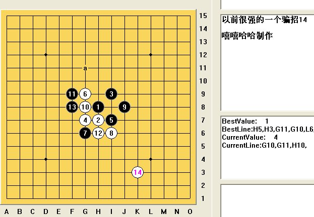

[互动棋谱]以前很强的一个斜二骗14
首页
茗弈阁
#1 [互动棋谱]以前很强的一个斜二骗14 作者：wd1988 发表时间：2009-3-29 12:42:42
我担任裁决殿考官的时候，经常看到对手执黑斜二。为了节约时间和直观地判断应考者的水准，我经常开出以下斜二的骗14。这个14我在2006年的时候还一度杀不出，觉得骗得很厉害，黑大优，但是难以必胜。后来脑瓜开窍，一时来神把这个14给地毯了。原来以前我的15走法都是错误的，我一直以为只要15直接活三就可以了，没想到还是要跳三，返璞归真，17是关键。

 以前很强的一个骗14.rar
以前很强的一个骗14.rar［ 潇洒 于 2009-3-29 12:55:12 时奖励此帖[金币加 20 威望加1］
［此帖子已被 茗弈小刀 在 2009-4-22 19:08:42 编辑过］
#2 Re:以前很强的一个斜二骗14 作者：潇洒 发表时间：2009-3-29 12:56:29
支持下 15下8下面也是可以胜的
#3 Re:以前很强的一个斜二骗14 作者：岳麓小棋后 发表时间：2009-3-29 12:57:45
嘻嘻哈哈的帖子不能看，得用“瞻仰”两个字 学习了，鲜花奉上
学习了，鲜花奉上
#4 Re:以前很强的一个斜二骗14 作者：刀魂 发表时间：2009-3-29 21:18:55
17 F11，哈哈，我早就 杀过了。。。
#5 Re:以前很强的一个斜二骗14 作者：启蒙 发表时间：2009-4-3 19:06:04
支持一下。还是第一次见这个14,如果我黑的话，估计极有可能上当！
#6 Re:以前很强的一个斜二骗14 作者：茗弈梓轩 发表时间：2009-4-10 11:12:49
从强骗中学习，也是一种进步。
#7 Re:以前很强的一个斜二骗14 作者：屏蔽 发表时间：2009-4-12 14:36:07
以前不知道结论的时候，为了保险起见一般都是15-I5。